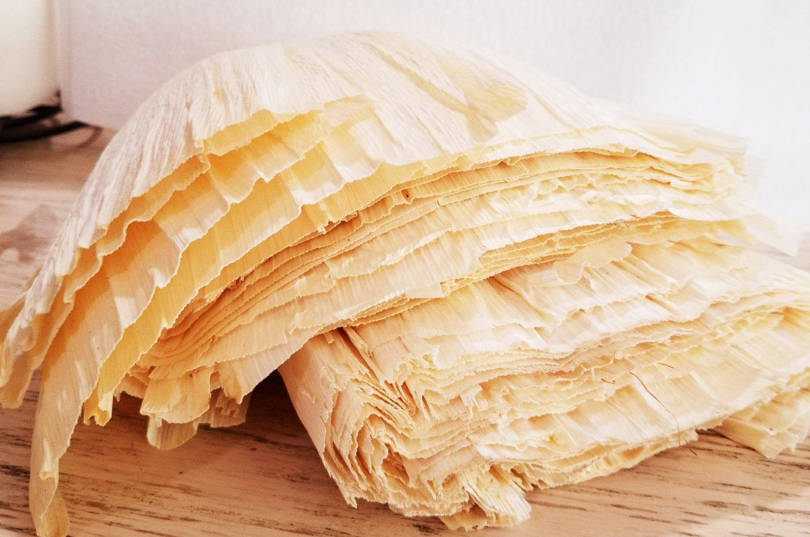
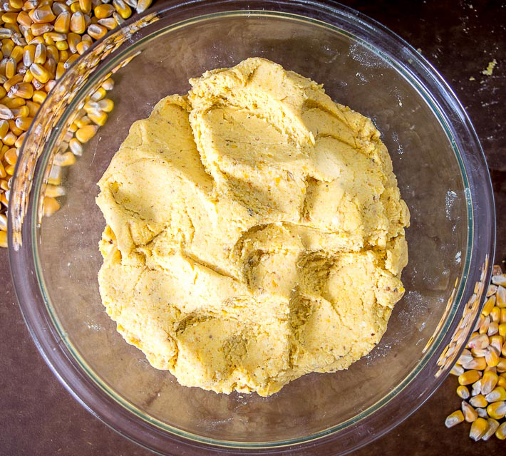
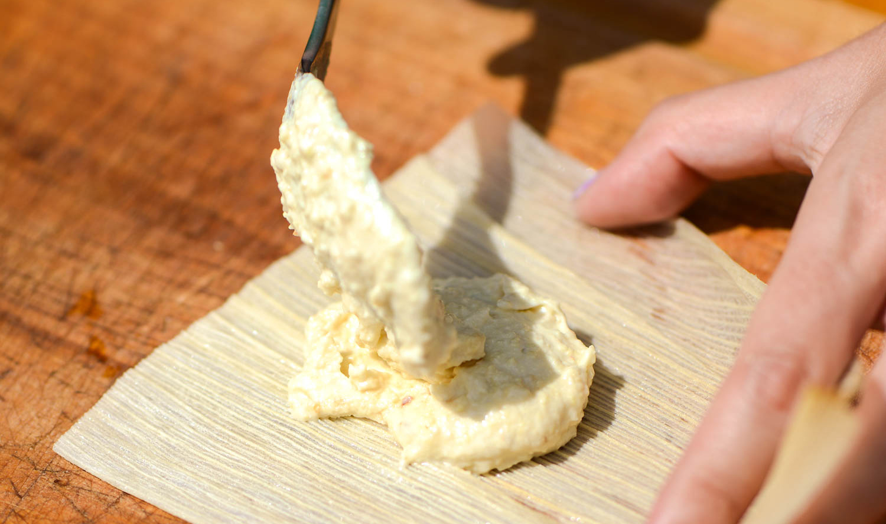
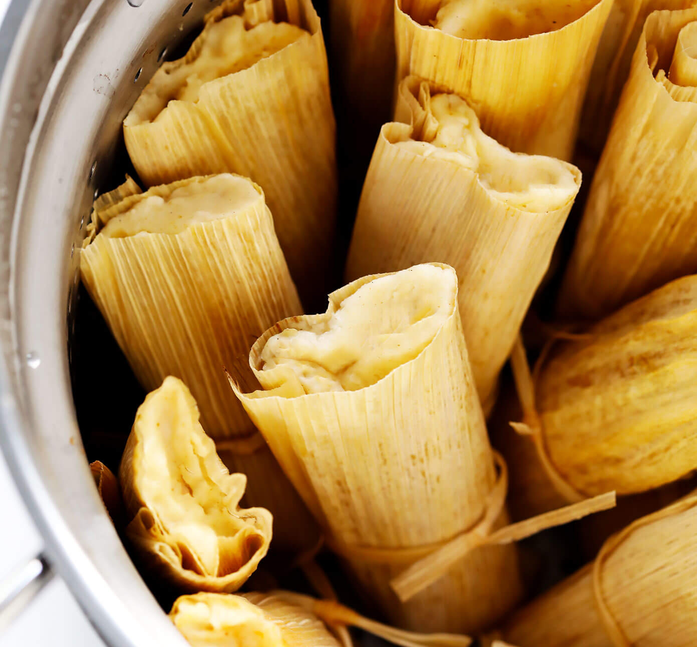

A tamale is a traditional Mesoamerican dish, probably from modern-day Mexico, made of masa or dough, which is steamed in a corn husk or banana leaf. The wrapping can either be discarded prior to eating, or be used as a plate, the tamale eaten from within. Learn how to make tamales with this easy recipe! They’re easy to customize (chicken, beef, pork and vegetarian filling recipes provided), they’re made with zero lard or shortening, they’re easy to freeze, and taste as delicious as ever.

the ingredients
1 package dried corn husks
6 cups masa harina
2 teaspoons Kosher salt
2 teaspoons ground cumin
1 teaspoon baking powder
6 cups chicken or vegetable stock
3/4 cup mild-flavored oil (e.g. olive oil)
2–3 cups filling
1 cup salsa

prepare
Soak the corn husks. Place the corn husks in a large stockpot or pan and cover completely with warm water. Soak for 30 minutes or so until softened.
Mix the masa (dough). Meanwhile, in the bowl of a large stand mixer, add masa marina, salt, and baking powder, and whisk to combine. Add the oil, then beat on low speed until combined. Then gradually add the stock, and beat on low speed until combined. Once the stock is incorporated, increase speed to medium, and beat for 10 minutes until fluffy, stopping occasionally to scrape down the sides of the bowl if needed. Cover the mixing bowl with a damp paper towel and refrigerate until ready to use.
Prepare your filling. Toss together your desired filling(s) and sauce until combined. In general, you want enough sauce to coat and flavor the filling, but not so much that the filling is really juicy/watery.

assemble
Lay the soaked corn husk on a flat surface. A simple plate or cutting board will do.
Spread your masa on the corn husk. About 1/4 cup (or a little more) will do. I highly recommend using a large cookie scoop to measure out the masa. Use a spoon or your fingers to spread it out into a rectangle large enough to enclose your filling. (I keep a little bowl of water nearby to dip my fingers regularly, which helps the masa from sticking to them.)
Add your filling/sauce to the center of the masa. Tamales use surprisingly little filling — just a tablespoon or two will do. Add it to the center of your masa.
Fold the corn husk in half vertically. Then very carefully, fold the corn husk in half so that the masa wraps completely around the filling, maybe using your fingers to pinch it together just a little bit.
Wrap the corn husk into a little burrito. Continue folding the corn husk completely over to one side so that it is a burrito/cylinder shape.
Fold the top (skinny) end down to enclose one end of the tamale. The image above explains this best. One end of the tamale will be exposed, and the other will be folded over. (I like to fold my tamales to cover the side with the seam.
Tie the tamale together. I like to shred a few corn husks into long skinny strips to tie the tamales together (this is a perfect use for the husks that are too skinny!). But you can also use baking string.

cook
Steam the tamales. Add water to the bottom of a stockpot or Instant Pot. Then add a steamer basket, fill it with your tamales, and steam until the tamales are hot and cooked through and the masa separates easily from the corn husks, about 30 minutes on the stovetop or 20 minutes (high pressure, natural release) in the Instant Pot.
serve
Serve tamales. Remove from the steamer and serve immediately. Or refrigerate in a tightly-sealed ziplock bag for up to 3 days, or freeze for up to 3 months.